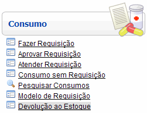
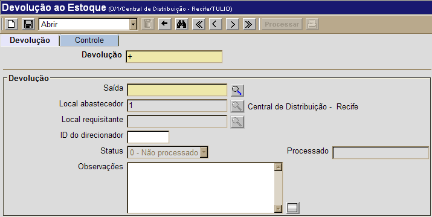
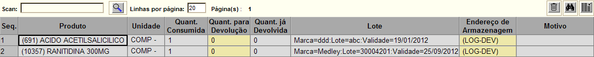
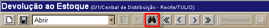
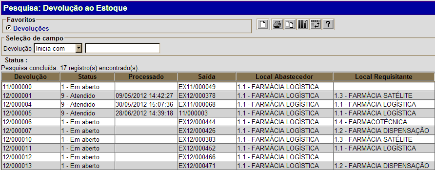

Devolução ao Estoque [ Voltar]Utilize este formulário para efetuar a devolução ao estoque de produtos separados para consumo. Para acessar o formulário, vá ao menu "Consumo / Transferência" na página inicial e clique em "Devolução ao Estoque".
Ao clicar no link, o sistema abrirá a seguinte tela: 
Selecione uma das duas opções abaixo para ver o passo-a-passo: Efetuar devolução ao estoque Consultar registro de devolução ao estoque Efetuar devolução ao estoque1º Passo: informe no campo "Saída" o código do consumo/transferência que deseja desfazer. Clique no botão [Procurar]
para selecionar a saída a partir de uma listagem de
consumos/transferências cadastradas. Após localizá-la, selecione-a com
um clique. [Procurar]
para selecionar a saída a partir de uma listagem de
consumos/transferências cadastradas. Após localizá-la, selecione-a com
um clique.2° Passo: clique no botão  para salvar o registro de devolução. Assim
que a devolução é salva, é exibida na parte inferior da tela uma grade
que contém o(s) produto(s) referente(s) à saída informada. para salvar o registro de devolução. Assim
que a devolução é salva, é exibida na parte inferior da tela uma grade
que contém o(s) produto(s) referente(s) à saída informada. 3° Passo: leia o código de barras dos produtos da devolução. Assim que são lidos, o sistema os registra na grade em sua quantidade e detalhes de lote. Por padrão, assim que são lidos os códigos de barra, o sistema assume que o motivo da devolução ao estoque deve-se à alta do paciente. Se este não for o caso, selecione no campo "Motivo" da grade a razão adequada para a devolução em questão. 4° Passo: clique no botão para salvar a devolução. Quando os produtos da devolução já tiveram seus códigos de barras lidos e a devolução foi salva, o botão  estará habilitado para conclusão da devolução. estará habilitado para conclusão da devolução.5° Passo: clique no botão para concluir a devolução. Se desejar, clique no botão para visualizar e imprimir o relatório "Nota de Devolução".Consultar registro de devolução ao estoque1º Passo: para localizar a devolução que deseja consultar, clique no botão da barra de botões. da barra de botões. 
Na tela de pesquisa do formulário "Devolução ao Estoque", configure os filtros da pesquisa para que o sistema retorne automaticamente todos os registros correspondentes. Para mais informações sobre outros recursos e funcionalidades da pesquisa, favor ver o manual Introdução ao Sistema. 
Assim que o projeto/programa é selecionado, seu cadastro será aberto e exibidas as informações atuais. |